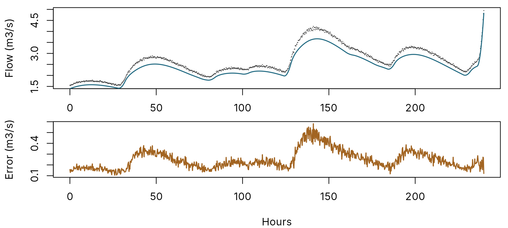
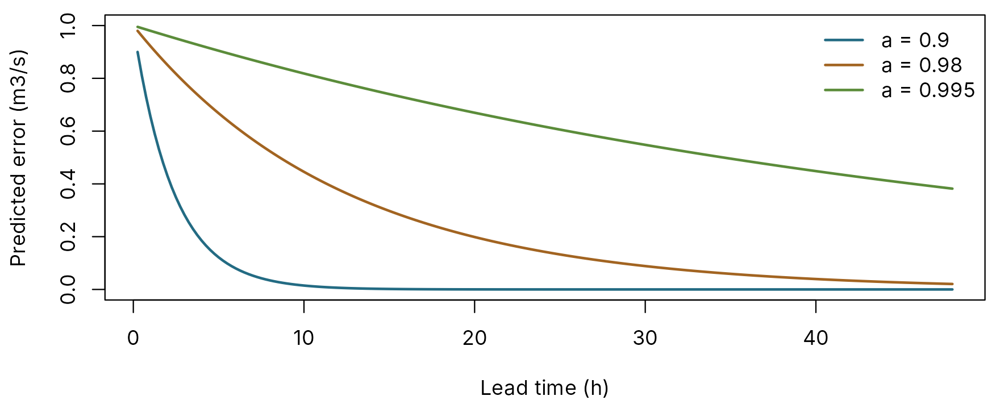
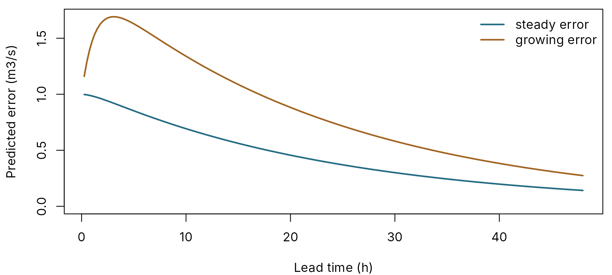
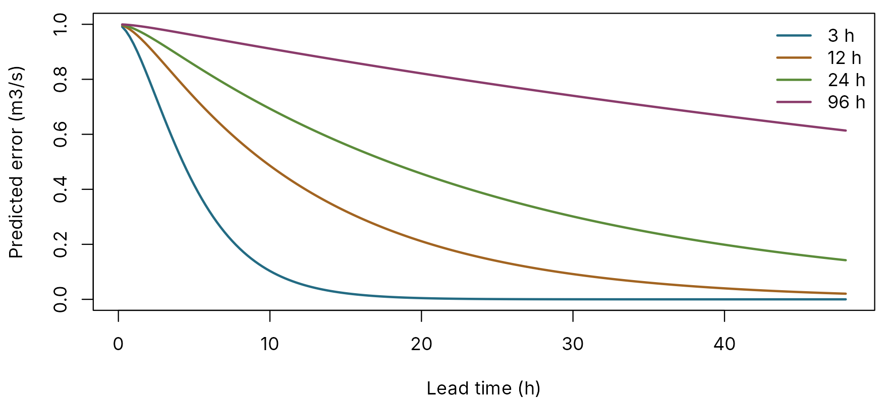

AR and ARMA error correction, explained
pdmS7 documentation
Source:vignettes/ar-error-correction.Rmd
ar-error-correction.RmdA rainfall-runoff model is never exactly right, and its errors are not random from one time step to the next. If the model is 2 m3/s low now, it will very probably be about 2 m3/s low in 15 minutes’ time too. Error correction uses that. At the moment a forecast is issued, the latest error is known, because the river has been measured. An autoregressive (AR) model predicts how that error will carry on, and the forecast becomes the simulation plus the predicted error.
This is what IMFS does operationally, as post-processing on top of the model. This article explains, in plain terms, what the AR coefficients mean, where they come from, and where the method stops working. Testing forecasts with hindcasts shows how to measure whether it helps on your catchment.
Why errors persist
A made-up catchment at 15-minute steps, with a model whose rainfall factor is 10 per cent low and whose stores are a little too fast:
set.seed(5)
n <- 4 * 24 * 60
wet <- stats::runif(n / 16) < 0.12
rain <- rep(ifelse(wet, stats::rgamma(n / 16, 0.8, scale = 2.5), 0), each = 16) / 4
forcing <- data.frame(rain = rain, pet = 0.01)
truth <- pdm_model(area_km2 = 60, fc = 1.1, dt = 0.25,
surface = FlodeCascadeRouting(k1 = 3, k2 = 5))
model <- pdm_model(area_km2 = 60, fc = 1.0, dt = 0.25,
surface = FlodeCascadeRouting(k1 = 2, k2 = 4))
observed <- run_pdm(truth, forcing, initial_state_from_flow(truth, 1, 0.7))$output$q_m3s *
exp(stats::rnorm(n, 0, 0.01))
simulated <- run_pdm(model, forcing, initial_state_from_flow(model, 1, 0.7))$output$q_m3s
error <- observed - simulatedThe error is observed minus simulated, so a positive error means the model is too low. This is the convention of IMFS and reach.postproc.
days <- (n - 4 * 24 * 10 + 1):n
hours <- (days - days[1]) / 4
par(mfrow = c(2, 1), mar = c(2, 4.2, 0.6, 0.6))
plot(hours, observed[days], pch = 16, cex = 0.2, col = pal[1], xlab = "", ylab = "Flow (m3/s)")
lines(hours, simulated[days], col = pal[2], lwd = 1.5)
par(mar = c(4, 4.2, 0.6, 0.6))
plot(hours, error[days], type = "l", col = pal[3], lwd = 1.5, xlab = "Hours",
ylab = "Error (m3/s)")
abline(h = 0, col = pal[7], lty = 2)
Top: observed (points) and simulated (line) flow over ten days. Bottom: the error.
The error moves slowly: it builds up during a flood and drains away afterwards. Measured over the whole record, the error now and the error 15 minutes later have a correlation of 0.982; one hour apart, 0.978; six hours apart, still 0.83. That memory is what an AR model exploits.
The simplest case: one coefficient
An AR(1) model says the next error is a fixed fraction of the current one:
next error = a × current error
With a = 0.9, an error of 1 m3/s is predicted to be 0.9 after one step, 0.81 after two, and so on: it fades away, more slowly the closer a is to 1. With a = 1 it would never fade, which is the same as assuming the model stays exactly as wrong as it is now.
project <- function(a, start, steps) {
e <- start
out <- numeric(steps)
for (k in seq_len(steps)) {
out[k] <- sum(a * e)
e <- c(out[k], e[-length(e)])
}
out
}
steps <- 4 * 48
lead <- seq_len(steps) / 4
par(mar = c(4, 4.2, 0.6, 0.6))
plot(range(lead), c(0, 1), type = "n", xlab = "Lead time (h)", ylab = "Predicted error (m3/s)")
for (i in 1:3) {
a <- c(0.9, 0.98, 0.995)[i]
lines(lead, project(a, 1, steps), col = pal[i + 1], lwd = 2)
}
legend("topright", paste("a =", c(0.9, 0.98, 0.995)), col = pal[2:4], lwd = 2, bty = "n")
How an error of 1 m3/s is carried forward by AR(1) models, at 15-minute steps.
The time an error takes to fall to 37 per cent (1/e) of its size is its decay time: -1 / log(a) steps. For a = 0.98 that is 49 steps, about 12 hours at 15 minutes.
Three coefficients: the IMFS models
IMFS uses three coefficients, AR(3): the next error depends on the last three.
next error = a1 × current error + a2 × previous error + a3 × the one before
Three past values carry more than size. They also carry direction: whether the error is growing or shrinking. The Environment Agency 2024 default set is
ar_ea_default()
#> a_1 a_2 a_3
#> 1.765000 -0.726250 -0.040656These numbers are hard to read directly, because they work together. Two views help.
What it does to a steady error, and to a growing one
ea <- ar_ea_default()
steady <- project(ea, c(1, 1, 1), steps)
growing <- project(ea, c(1, 0.8, 0.6), steps)
par(mar = c(4, 4.2, 0.6, 0.6))
plot(range(lead), range(c(0, steady, growing)), type = "n", xlab = "Lead time (h)",
ylab = "Predicted error (m3/s)")
lines(lead, steady, col = pal[2], lwd = 2)
lines(lead, growing, col = pal[3], lwd = 2)
legend("topright", c("steady error", "growing error"), col = pal[2:3], lwd = 2, bty = "n")
The EA 2024 default projecting an error that has been steady at 1 m3/s, and one that has been growing (0.6, 0.8, then 1 m3/s).
A steady error of 1 m3/s fades slowly: 0.82 after 6 hours, 0.39 after a day. A growing error keeps growing for a while, to a peak of 1.69 m3/s about 3 hours ahead, before it too fades. The model extrapolates the recent trend in the error. On a rising limb where the model is falling further behind, that is exactly right. Where the error was growing because of gauge noise or a short blip, the AR model projects the blip forward. That is why the hindcast found it no better than persistence in the first hour on noisy data.
Roots: the timescales inside the model
An AR(3) model behaves like three simple fading processes added together, one for each root of its characteristic equation. Each root has its own decay time, and that splits the coefficients into timescales a hydrologist can read:
ar_roots <- function(a) {
z <- polyroot(c(-rev(unname(a)), 1))
data.frame(root = format(round(z, 4)), decay_steps = round(-1 / log(Mod(z)), 2),
decay_hours_at_15min = round(-1 / log(Mod(z)) / 4, 2))
}
ar_roots(ea)
#> root decay_steps decay_hours_at_15min
#> 1 -0.0498+0i 0.33 0.08
#> 2 0.8252+0i 5.20 1.30
#> 3 0.9896+0i 95.79 23.95The EA default has:
- a slow root, near 1, decaying over about a day: the persistence of the error;
- a medium root, decaying in about five steps: this one carries the trend;
- a tiny negative root, gone within a step: it only fine-tunes the first step.
The model is stable if every root lies strictly
between -1 and 1 in size. A root of size 1 or more would make a
projected error grow without limit.
reach.postproc::assess() applies the Environment Agency’s
review criteria to a parameter set, including stability, decay times
that are too long or too short, and unwanted oscillation. Use it on any
set before operational use.
Where coefficients come from
| Source | Function | When |
|---|---|---|
| EA 2024 default | ar_ea_default() |
No better information; defined for 15-minute steps |
| The default family, from one timescale | ar_from_response_time() |
You know how fast the catchment responds |
| Fitted to this model’s errors |
fit_error_updater(), or fit_window in
pdm_hindcast()
|
A long record of this model’s errors exists |
| Fitted to flood events only | reach.postproc::fit_ar_from_events() |
Floods are what matter, and there are enough of them |
The default family
The EA default is one member of a family of AR(3) sets, all sharing
the same first coefficient and fast root, and differing only in the
decay time of the slow root. ar_from_response_time() builds
a member from one timescale, by the same construction as
reach.postproc::default_family_ar_parameters(). pdmS7
offers the model’s own time to peak from
pdm_response_time() as that timescale.
decays <- c(3, 12, 24, 96)
par(mar = c(4, 4.2, 0.6, 0.6))
plot(range(lead), c(0, 1), type = "n", xlab = "Lead time (h)",
ylab = "Predicted error (m3/s)")
for (i in seq_along(decays)) {
lines(lead, project(ar_from_response_time(decays[i], dt = 0.25), c(1, 1, 1), steps),
col = pal[i + 1], lwd = 2)
}
legend("topright", paste(decays, "h"), col = pal[2:5], lwd = 2, bty = "n")
A steady error projected by members of the default family, labelled by their principal decay time, at 15-minute steps.
The EA 2024 default sits almost exactly on the 24-hour member. A flashy catchment, with a short time to peak, gets a correction that fades quickly; a slow one keeps its correction for longer. Linking the forecast error’s decay to the catchment’s time to peak is an approximation, the same one reach.postproc makes, so check the result with a hindcast.
Fitting
fit_error_updater() fits the coefficients to a model’s
errors by maximum likelihood, using stats::arima():
calibration <- seq_len(n / 2)
fitted <- fit_error_updater(observed[calibration], simulated[calibration], order = c(3, 0))
round(fitted$updater@ar, 4)
#> [1] 0.4387 0.3085 0.2488
ar_roots(fitted$updater@ar)
#> root decay_steps decay_hours_at_15min
#> 1 -0.2795+0.4138i 1.44 0.36
#> 2 -0.2795-0.4138i 1.44 0.36
#> 3 0.9978+0.0000i 445.51 111.38The fitted set is quite unlike the default. Its slowest root decays
over about 111 hours, against the default’s 24, and its two fast roots
are a complex pair, which makes the projected error wobble from step to
step. A long decay time is the fit’s way of saying this model’s error is
mostly a persistent bias, the low rainfall factor, which is true here.
reach.postproc::assess() would test both the decay time and
any oscillation against the review criteria.
A fit reflects this model’s errors, in this catchment, over this
period. It changes whenever the model is recalibrated. A fit over a
whole record is weighted towards quiet weather, because there is more of
it, and gauge noise pulls the coefficients towards fast decay. Fitting
to flood events only, as
reach.postproc::fit_ar_from_events() does, targets the
conditions that matter. Whichever you use, judge it on events it was not
fitted to.
Sign conventions
The same model can be written with opposite signs, and mixing them up turns a stable model into an unstable one. pdmS7 follows IMFS, Deltares and reach.postproc:
| Convention | Written as | EA 2024 default |
|---|---|---|
| Deltares, IMFS, reach.postproc, pdmS7 | next error = a1 × current + a2 × previous + a3 × earlier | a = 1.765, -0.72625, -0.040656 |
| Moore (2007), equation 31 | coefficients phi = -a | phi = -1.765, 0.72625, 0.040656 |
error_updater(ar = ) takes the Deltares values, so a set
can be copied from IMFS or reach.postproc unchanged.
ARMA: adding a moving average
An ARMA model adds moving-average (MA) terms: the
next error also depends on recent surprises, the parts of
recent errors the AR terms did not predict. They let the model react to
a sudden change, such as a shift in the rating, without the long memory
of the AR part. pdmS7 supports them, with
error_updater(ar = , ma = ) and
fit_error_updater(order = c(p, q)), and Moore (2007)
describes them, but IMFS uses AR only. Start with AR(3); add an MA term
only if a hindcast shows it helps.
arma <- fit_error_updater(observed[calibration], simulated[calibration], order = c(2, 1))
c(ar = round(arma$updater@ar, 3), ma = round(arma$updater@ma, 3))
#> ar1 ar2 ma
#> 0.808 0.189 -0.361Additive or log errors
By default errors are in m3/s, additive, as in IMFS.
With scale = "log" they are taken on the log scale, so a 10
per cent error at high flow counts the same as a 10 per cent error at
low flow, and a correction can never make the flow negative. Additive
correction can push a low flow below zero; pdm_hindcast()
raises any updated flow below lower_limit, 0 by default,
back up to it.
Where AR correction stops working
AR correction predicts how the error develops. It does not know about the river. So:
- Timing errors. If the model’s flood arrives an hour late, the error swings positive then negative. The AR model sees only the first half and projects it forward, the wrong way.
- Noise. Gauge noise in the latest observation is projected forward as if it were real.
- Gaps. With a missing observation in the last three steps, there is no projection; the hindcast leaves that origin out.
- Ratings. A correction made in flow does not keep its shape when converted to level through a nonlinear rating, and the reverse.
- Beyond the decay time, the correction has faded and the forecast is the model’s alone.
The way to know whether it helps, and at which lead times, is to test it on past events: Testing forecasts with hindcasts.
Summary
| Question | Answer |
|---|---|
| What is corrected? | The error, observed minus simulated, projected forward from the forecast origin |
| What do the coefficients mean? | Read them through their roots: each root is a decay time |
| Which set? | Start from the EA 2024 default or
ar_from_response_time(); fit only with care |
| Is it stable? | Every root smaller than 1 in size; check with
reach.postproc::assess()
|
| Does it help here? | Run pdm_hindcast() and compare skill against
persistence by lead time |